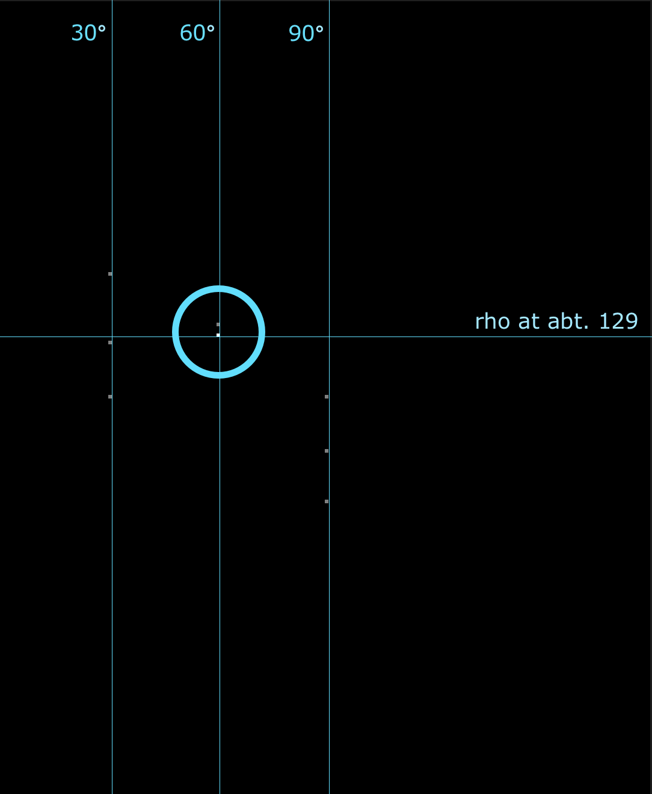

By Mike1024 [Public domain], via Wikimedia Commons
For a pet-project of mine I wanted to understand more details about the Hough Transformation algorithm. This algorithm is used in image processing to detect lines (and also other shapes) in images. There are already a lot of explanations out there, but none of them really clicked for me, usually because they assume some knowledge in Mathematics - given that I forgot a lot about what I learned in school, I thought it would be an interesting exercise to take the Hough Transform implementation apart and examine how it works, using my own words.
To give credit where credit is due, there is an example on the Hough Transform wikipedia page that might not be very pretty but served as an inspiration for this article.

By Mike1024 [Public domain], via Wikimedia Commons
The Hough Transform algorithm needs an input image that is used for edge detection. Meaning, it makes sense to convert the input to a black and white matrix first, using any of the usual edge detector algorithms, like Canny Edge Detector. In the example from wikipedia, shown above, the image is assumed to be already a black and white matrix. It contains three black dots, which are "edges" - that means they are part of the "line" we are looking for in this image.
In order to understand the inner workins of the Hough Transform, I started from the sample image from wikipedia, but drew a complete line in it.
This is now our starting image:
| Initial image, with one line. | Points of interest, detected as edges. |
We assume some fake edge detector algorithm, that will find three data points on the line:
In the first step of the Hough Transform we go through each pixel in the image. If we decide that it's a edge point, that means it is not a background pixel but could be part of a line, as defined by our edge detection mechanism, we draw some lines through this point, in certain angles we can chose.
As our example is very limited in scope, we only chose three angles: 30°, 60° and 90°. The idea behind this is, that if multiple points produce identical lines (we see what identical lines means later) at identical angles, then these points must be part of the same line. This is the key to understanding how Hough Transform works. Let's draw some lines at our data points and see how it looks. The examples show 30° and then 60°.
| Starting from the data point as center, we draw lines going through it, counter-clockwise. First 30° ... |
... then 60° ... | ... this image shows all angles for all data points |
As it seems, we have a winner here. At 60° we can see that the lines from all three points more or less intersect. Now we need to teach the computer that this means there is a line.
As we can see in the previous picture, we have three lines, starting from `P1`, `P2` and `P3` in a 60° angle that intersect. As all three data points produce the same line they can be part of the same line.
In this simple example, we only have three datapoints. But in images with noise, these three data points can be only background noise and should maybe ignored. Hough Transform uses a voting mechanism so that after all pixels of an image are processed, it can be determined which of these pixels are background noise and which are actual points on lines.
Back to our example: given is the current angle angle (called `\theta`), here 60°, and the x/y coordinates of the current data point (current pixel). So `\theta` describes the angle of the line we draw from the data point. Now we need another parameter to describe the line we just drew. As wikipedia says:
In general, the straight line `y = mx + b` can be represented as a point `(b, m)` in the parameter space. [...] for computational reasons, Duda and Hart proposed the use of the Hesse normal form `\rho=x cos \theta + y sin \theta` , where `\rho` is the distance from the origin to the closest point on the straight line, and `\theta` is the angle between the `x` axis and the line connecting the origin with that closest point.
So there you have it, we use angle `\theta` and distance `\rho` to describe the line.
In order to count how often a line occurs at angle `\theta` with distance `\rho`, we create a 2D matrix, with the x-axis being the maxium amount of angles we want to check, let this be 180 (although we only check three angles actually: 30°, 60° and 90°) and the y-axis being the maximum of `\rho`. The maxium distance from any point to the origin of the image can be a diagonal line from the bottom left of the image (the origin) to the top right of the image - this is the hypotenuse which we can easily compute with some basic trigonometry.
This will create a 2-dimensional array of the size 180 (maximum `\theta`) by maximum_line_length (which is the maximum of `\rho`):
So for each data point in the image we already know `\theta` and then can compute `\rho`. With these two paramters we "vote" in the 2D-matrix, that means, we increment the index of matrix[theta][rho] by one. So every point that produces the same `\theta` and `\rho` will cast one vote for this index in the voting matrix. The voting matrix is correctly called accumulator.
Our code will look like this:
This is how we measure `\rho`, shown for P1 at 30° and 60°.:
| `\rho`/`\theta` for P1 at 30° | `\rho`/`\theta` for P1 at 60° |
The actual Hough Transform is now finished. The result is an accumualtor which shows what combination of `\theta` and `\rho` appeared most often. The space described by the accumulator is called Hough Space. As a user of the algorithm, we need to define a value to filter the Hough Space. Meaning, this value will decribe how often a combination of `\theta` and `\rho` must have appeared before we consider it a line. In our case, as we only have three datapoints on the same line, so the threshold can be two. In general it makes sense to make the threshold based on the maximum value in the accumulator, so we can say we only consider lines that are at least 75% of the maximum votes.
In order to visualize what datapoints we found, we can also dump the Hough Space as an image. The brightest point in this image is the intersection of two of three data points in our image. For people wearing glasses, like me, I added a larger version of the graph showing the hough space:
|  | |||
| Hough Space from three data points in our simple example ... | ... a bit larger. | Another example ... | ... and checking more angles produces this hough space, clearly showing the detected lines (the brightest points). |
After having found lines in the image it's often required to outline these lines in the original image. This is also useful to see if we actually detected anything interesting.
Given that we already know which combination of `\rho`/`\theta` produce the values of interest, we can now derive a line again from `\rho` `\theta`. The line will be described by `P1x`, `P1y`, `P2x` and `P2y`. We know that the line we are looking for is described via `\rho=x cos \theta +y \sin \theta`, but this equation has two unknows for us: `x` and `y`. So in order to find out `x` we need to know `y` and the other way round. But how can we find out `y`? We can be pragmatic here and just substitute a value we know.
If we assume that the line we are looking for is infinitly long, we know that at some point it will intersect with the x-axis of our image at 0, and it will intersect with the y-axis of our image at 0. Knowing this we can use 0 as a substitute for `x` or `y` when solving `\rho=x cos \theta +y sin \theta`. We assume `P1x` will be 0 - and we compute `P1y` and we assume that `P2y` will be 0 and we compute `P2x`.
In order to find out the coordinates of the detected line, we iterate again over the Hough Space and compute the start and end point of the line:
There is one caveat though: It is very well possible that the computes coordinates are outside of our image - we will need to clip them to the size of our image, otherwise we won't be able to plot the line. I ported the Liang Barsky clipping algorithm in my example Rust project in order to clip the lines. The final result looks like this:
The initial, black line, overlayed with a green line that shows which coordinates we computed
That's how Hough Transform works, explained with a simple example and some hacked-together code. The example code in Rust can be found on GitHub.